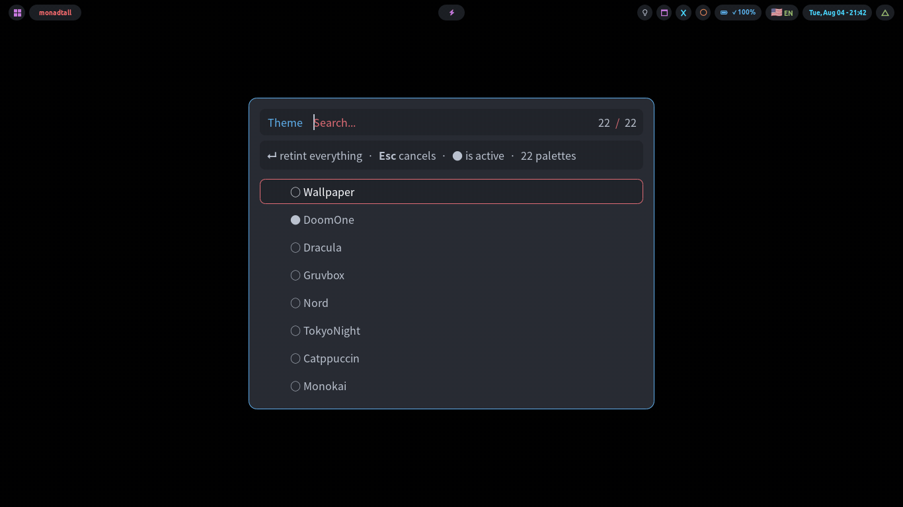
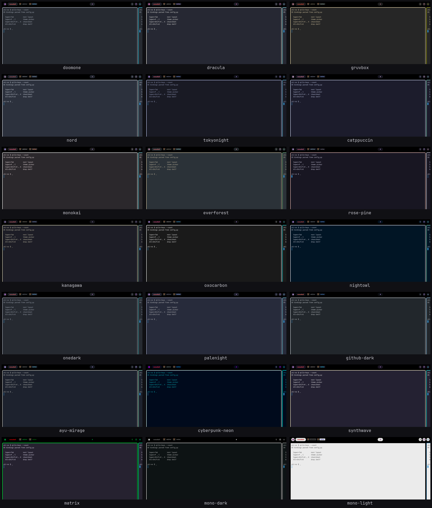

Changing the colours
Pick a colour scheme and everything follows: the bar, the terminal, the menus, the notifications, the browser, your text editor, your folder icons.
How to change it
-
Press Super+P, let go, then press c.
A list of colour scheme names appears. The one you are using now has a
●next to it. -
Move up and down with the arrow keys, and press Enter on the one you want.
The screen goes soft and frosted for a second or two while everything recolours, then comes back in the new colours.

Or type the name in a terminal:
theme-apply gruvboxClicking through the list quickly is fine. A new choice cancels the one still in progress.
The 22 colour schemes

| Name | Name | Name |
|---|---|---|
doomone (the default) | kanagawa | cyberpunk-neon |
dracula | oxocarbon | synthwave |
gruvbox | onedark | matrix |
nord | palenight | mono-dark |
tokyonight | nightowl | mono-light (the only light one) |
catppuccin | github-dark | wal — shown as Wallpaper in the picker |
monokai | ayu-mirage | |
everforest | ||
rose-pine |
If you want a light theme
mono-light is the one light scheme. Everything else is dark.
It also switches the underlying window style and icon set to their light versions, so ordinary applications render properly dark-on-white instead of looking like a dark theme with pale colours poured over it.
Matching your wallpaper
The scheme called Wallpaper in the picker (wal if you are typing)
reads the colours out of your current wallpaper and builds a scheme from them.
theme-apply walDrop any image into ~/Pictures/Wallpapers/. It appears in the wallpaper
picker (Super+P then w) immediately. Colours are worked out
the first time you use it and remembered afterwards. Nothing to run.
How the colours get picked, and why they are always readable
Colours pulled straight out of a photo are often unreadable. Grey text on a grey bar. So every generated scheme is forced to meet a quality bar first: the strongest accessibility contrast standard between background and text, a slightly lower one per accent, and a guaranteed spread of hues so the accents do not all come out the same.
The six accent slots have fixed jobs, which is what stops "urgent" ever coming out green. Details in How it works.
Wallpaper and theme are separate
Changing your wallpaper does not change your colours, unless you are on the Wallpaper scheme.
On any other scheme you chose those colours deliberately, so a new picture changes only the picture. True whichever of the three ways you use to set one.
What changes colour
Almost everything. In particular:
- The bar, and all the popup windows
- The terminal — already-open ones too, immediately
- Every menu and picker
- Notifications
- Ordinary application windows, and Qt applications like Telegram and the file manager
- The web browsers' own toolbars and tabs — Brave, Chrome, Chromium, qutebrowser
- The Neovim text editor
- Your folder icons
- The mouse pointer theme
- The startup screen — with one extra step
Two things need a moment.
- Telegram and the file manager pick up new colours when they next start, not while running. Close and reopen them, or log out and back in.
- Web pages are not recoloured, on purpose. The desktop tells websites you prefer dark mode and each site serves its own dark design, which beats a filter applied over the top. For a site with no dark design, turn on force-dark for that one site from your browser's page menu.
Why every one of those needs a different mechanism
There is no shared standard. Each of the fifteen programs is recoloured a different way. One takes a live command. One needs a file swapped underneath it. One has to be restarted. One needs a browser extension repacked and reinstalled. Full table in How it works.
The startup screen
An Arch logo inside a progress ring, with your name underneath in block letters,
in the current colours. Nothing to set up. The name comes from your username, so
ati becomes ATI.
This one does not change with the rest. It has to be rebuilt, which takes about a minute. Far too slow for a colour change. So a theme change tells you the startup screen is out of date and you rebuild it when you feel like it:
boot-splash syncTo see the current state of things:
boot-splash statusTo see what it will look like without restarting:
boot-splash previewThat builds an animation from the real installed files at your real screen size. What you see is what you get.
Other things boot-splash can do
boot-splash generate # re-draw it (changes nothing about starting up)
boot-splash preview --real # show it for real, on a spare screen
boot-splash check # 16 safety checks, run before it will change anything
boot-splash enable # switch it on
boot-splash disable # switch it off and restore every backup
boot-splash status # what is installed and switched onWant a different name on it?
BOOT_SPLASH_NAME="Mohamed Attia" boot-splash generate && boot-splash preview
BOOT_SPLASH_SIZE=32 boot-splash generate # biggerTo remove it altogether:
./wizard.sh --uninstall --only=boot-splashWhy it is drawn this way, why the rescue boot option deliberately gets no splash, and what the 16 checks are: How it works.
If something stays the old colour
| What you see | What to do |
|---|---|
| Telegram or the file manager is still the old colours | Close and reopen it. Those read their colours once, when they start. |
| The startup screen is still the old colours | Run boot-splash sync. See above. |
| Folder icons never change | One optional package is missing. It fails silently by design rather than breaking the theme change. |
| The web page content is not dark | That is deliberate — see above. |
| Everything looks wrong and the text does not line up | A font is missing. See Troubleshooting. |
| Something else | Troubleshooting → Colours lists every case that has come up. |